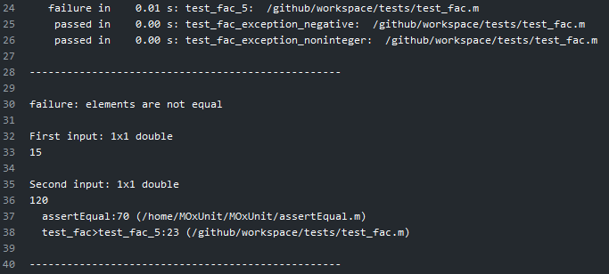
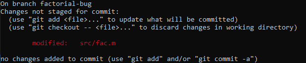
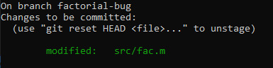

Voraussetzungen
keine
Lerninhalte
Versionskontrolle mit GitHub
Funktionsweise des automatisierten Unit Testing mit GitHub Actions
Einführung in GitHub#
Zu dieser Aufgabe gibt es hier eine GitHub Vorlage. Sie basiert auf einer Aufgabe von joergbrech.
Inhalt der Aufgabe#
Sie demonstrieren, dass Sie mit git vertraut sind.
Sie erhalten Einblick in automatisierte Software-Tests
1. Vorbereitung#
Machen Sie sich mit dem Versionskontrollsystem git vertraut und installieren Sie es auf ihrem Rechner.
Historisch bedingt ist git ein Kommandozeilenprogramm ohne graphische Oberfläche. Für Windows, Linux und Mac gibt es inzwischen einige gute graphischen Oberflächen, z.B. Tortoise Git für Windows.
In dieser Übung finden aber nur die Kommandozeilenbefehle Erwähnung. Um als Windows Nutzer:in git aus der Kommandozeile verwenden zu können, benutzen sie die git bash, oder noch besser: Installieren Sie sich eine Linux Distribution als Subsystem, z.B.
Ubuntu 18.04.Auf welche Weise Sie git bedienen, bleibt Ihnen überlassen.
Machen Sie sich mit dem Arbeiten auf Github vertraut, insbesondere mit dem Issue Tracker und Pull Requests. Als Erinnerungsstütze finden Sie weiter unten unter “Zusatzinformationen” ein Beispiel.
Hier finden Sie einige git und Github Tutorials:
Legen Sie los, sobald Sie folgende Fragen beantworten können:
Wozu wird git verwendet?
Was ist der Unterschied zwischen git und GitHub?
Was ist ein Repository?
Was verbirgt sich hinter den Begriffen “commit”, “branch” und “Staging Area” und “merge conflict”?
Was machen die Befehle
git clone,git pull,git push,git add,git commit,git checkout,git merge?Wer oder was ist Linus Tovalds?
2. Bugfix und automatische Tests#
Hinweis
Die hier beschriebene Aufgabe finden Sie auch unter Verwendung dieses Buches.
Mit jedem push in dieses repository werden automatische Tests für den Programmcode im
srcVerzeichnis durchgeführt. An dem roten Kreuz nebem dem letzten commit stellen Sie fest, dass mindestens einer der Tests nicht erfolgreich war: Abbildung 1: Hier finden Sie die Fehlermeldung.
Abbildung 1: Hier finden Sie die Fehlermeldung.
Sie erhalten zusätzliche Detailinformationen:
Abbildung 2: Auszug aus der detaillierten Fehlermeldung.
Wir lesen die Information von unten nach oben.
Zeile 38: Zeile 23 von
tests/testfac.m, im Funktionskörper der Funktiontest_fac_5ist die Ursache des Fehlers.Zeile 37: Offensichtlich wurde in Zeile 23 von
tests/testfac.mdie FunktionassertEqualaufgerufen, die den Fehler verursacht hat. Diese Funktion ist in Zeile 70 vonassertEqual.mdefiniert, das interessiert uns aber weniger.Zeilen 30-36: Die Funktion
assertEqualhat zwei Eingaben bekommen, von denen erwartet wurde, dass sie gleich sind. Offensichtlich sind sie es aber nicht: Die erste Eingabe ist 15, die zweite ist 120.Es ist Zeit sich den Test genauer anzuschauen:
function test_fac_5 % test if fac(5)==120 assertEqual(fac(5),120);
Offensichtlich wird getestet, ob
fac(5)120 ergibt. Tatsächlich liefert die Funktion aber 15 als Rückgabewert für die Eingabe 5. Offenslicht hat die Funktionfac, die insrc/fac.mdefiniert ist einen bug.
Wechseln Sie auf den Issue Tracker und eröffnen ein Issue, das das Problem möglichst treffend beschreibt.
Das erstellte Issue kriegt eine laufende Nummer zugewiesen. Unter der Annahme, dass es das erste Issue ihres repositories ist, ist dies
#1. Mit diesem hashtag können Sie sich in Kommentaren und commit messages auf das Issue beziehen.Es ist Zeit den bug zu beheben. Wechseln Sie auf die Hauptseite dieses repositories und klicken auf “Clone or Download”. Kopieren Sie sich den
hpptsLink auf ihr repository.
 Abbildung 3: Hier finden Sie den Link zum Klonen des Repository.
Abbildung 3: Hier finden Sie den Link zum Klonen des Repository.
Auf ihrem Rechner, öffnen Sie ein Kommandozeilenfenster (git bash, Ubuntu 18.04 WSL oder ein Terminal) und klonen Sie sich das Verzeichnis auf ihren lokalen Rechner.
git clone https://github.com/octo-org/octo-repo.git
wobei sie hier den Link ihres repositories verwenden. Es wird ein neuer Ordner angelegt, mit dem Namen
aufgabe1-projektbeschreibung-teamname. Wechseln sie in diesen Ordnercd aufgabe1-projektbeschreibung-teamname
und lassen Sie sich den Inhalt wieder geben:
ls -la
Sie erkennen, dass es sich bei dem Ordner um ein git-repository handelt daran, dass es einen Unterordner mit Namen
.gitgibt. In einem git-repository können Sie sich jederzeit den Status des repositories anschauen:git status
Erstellen Sie ein branch
factorial-bugund wechseln Sie auf diesen:git checkout -b factorial-bug
Alle Änderungen die sie nun in dem Ordner vornehmen finden nicht mehr im Hauptentwicklungszweig
masterstatt, sondern in ihrem eigenen lokalen Zweigfactorial-bug.Finden Sie den Fehler in
src/fac.mund beheben Sie ihn. Sie können hierzu einen beliebigen Texteditor, Matlab oder Octave verwenden. Wenn sie die Tests intests/test_fac.mlokal auf ihrem Rechner ausführen möchten, müssen sie sich vorher MOxUnit installieren, das ist aber nicht zwingend nötig.Vergewissern Sie sich per Kommandozeile, dass nur die Datei
src/fac.mgeändert wurde:git status

Sie können mit
git diffalle vorgenommenen Änderungen sehen.Fügen Sie alle geänderten Dateien der Staging Area hinzu
git add .
Überprüfen Sie den Status mit
git status
Commiten sie alle Änderungen aus der Staging Area in ihren lokalen branch
factorial-bugmit einer sprechenend commit Nachricht:git commit -m "fix bug in fac.m, addresses #1"
Überprüfen Sie den Status mit
git status
Es ist Zeit, ihre Änderungen in das remote repository auf Github zu pushen. Dazu erstellen Sie einen branch auf dem nicht-lokalen repository auf github mit dem selben Namen wie ihr lokaler branch,
factorial-bugund synchronisieren den lokalen und remote branch in einem Befehl:git push -u origin HEAD
Wechseln Sie wieder in den Hauptentwicklungszweig
git checkout master
Vergewissern sie sich, dass in diesem Zweig ihre Änderungen an
src/fac.mfehlen.Öffnen Sie ihr repository auf Github und wechseln Sie auf die branches Ansicht. Vergewissern Sie sich, dass es einen branch mit Namen
factorial-buggibt, der ihren commit enthält, und das nun alle automatischen Tests durchlaufen. Letzteres erkennen Sie am grünen Häkchen neben dem branch bzw. neben dem commit.
Wenn Sie zufrieden sind, erstellen Sie einen “Pull Request auf den
masterbranch” und wählen Sie auf der rechten Seite eines oder alle ihrer Teammitglieder als Reviewer aus.Pro Tipp: Schreiben Sie
fixes #1in die Beschreibung des Pull Requests. Dann wird Github automatisch das erstellte Issue schließen, sobald der Pull Request von ihren Teammitgliedern akzeptiert und gemerged wurde.Wenn Sie als Reviewer ausgewählt wurden, überprüfen sie die Änderung die ihr Teammitglied in ihrem Pull Request vorgenommen hat. Wenn sie zufrieden sind, wählen Sie “Approve Changes” und “Merge pull request” um alle Änderungen in den Hauptentwicklungszweig zu übernehmen.
Das Issue ist behoben und kann im Issue Tracker geschlossen werden.
Nun ist ihre lokale Kopie des
masterbranch um einen commit hinter demmasterbranch auf Github. Vergewissern Sie sich, dass sie auf dem Hauptentwicklungszweigmastersind und pullen sie sich alle Änderungen von dem remote repository auf Github in ihre lokale Kopie:git checkout master git pull
{kind=link}
Ich lege Ihnen sehr ans Herzen, diesen Workflow für ihre Projektarbeit zu übernehmen. Arbeiten Sie mit dem Issue tracker. Vermeiden Sie commits in den master branch. Arbeiten sie mit branches und Pull Requests. Schreiben Sie Tests für ihren Matlab-Code.
Zusatzinformationen#
Teamarbeit mit GIT
Der Pull-Request Workflow#
Sie arbeiten gemeinsam als Team an einem Projekt. Es empfiehlt sich vorab die Aufgaben zu verteilen. Der Issue Tracker bietet sich hier als unterstützendes Tool an.
Damit es möglichst zu wenigen Konflikten kommt, bietet es sich an, die Aufgaben so zu verteilen, dass man sich möglichst wenig in die Quere kommt. Am besten arbeitet ihr, in dem ihr nur in seltenen Ausnahmen direkt in den master branch commitet. Idealerweise folgt ihr dem Workflow mit Pull Requests:
Angenommen Maja möchte eine bestimmte Teilaufgabe bearbeiten, z.B. das Kapitel “Stand der Technik” in die Projektdokumentation einfügen.
Maja wechselt in ihrer lokalen Kopie des repositories auf den
masterbranch und sorgt dafür, dass sie alle aktuellen Änderungen aus dem Github repository enthält:git checkout master git pull
Sie erstellt einen neuen lokalen branch mit einem sprechenden Namen, z.B.
maja/chapter-stand-der-technik, und welchselt in diesen branchgit checkout -b maja/chapter-stand-der-technik
Anschließend kann Maja Dateien ändern oder neue hinzufügen, und jede inkrementelle Änderung commiten.
git add 02_stand_der_technik.tex git add main.tex git commit -m "Stand der Technik Kapitel geschrieben"
Sie kann jederzeit ihre lokalen Änderungen auf das Github repository pushen. Der Befehl
git push -u origin HEAD
erstellt einen neuen branch im remote Github repository mit dem selben Namen wie ihr lokaler branch. Wenn Sie weitere Änderungen an dem branch vornehmen möchte, muss sie beim nächsten mal nur noch
git pusheingeben, da es schon im remote Github repository einen branch mit demselben Namen gibt.
Sobald Maja mit der Bearbeitung ihrer Teilaufgabe fertig ist, kann sie auf Github eine Pull Request stellen, und einen ihrer Teammitglieder, Willi, um einen review bitten. Wenn Willi mit Majas Änderungen einverstanden ist, kann er den Pull Request in den
masterbranch mergen.Sobald Maja’s Änderungen im
masterübernommen sind, kann der branchmaja/chapter-stand-der-technikohne Bedenken gelöscht werden.Falls Maja eine Aufgabe bearbeitet hat, die im Issue Tracker hinterlegt ist, kann das Issue als erledigt markiert werden.
Was gehört unter Versionskontrolle und was nicht.
Stellen Sie folgende Dateien unter Versionskontrolle:#
Alle von Menschen lesbare Dateien (ASCII), die sie zur Bearbeitung ihres Projektes erstellt haben. Das sind zum Beispiel
*.texDateien oder*.mDateien.Binäre Dateien wie Bilder, die sie in ihrer Dokumentation verwenden.
Stellen Sie folgende Dateien nicht unter Versionskontrolle:#
Alle automatisch erstellten Dateien. Bei Latex sind das zum Beispiel Dateien mit der Endung
*.auxoder*.tmp.Große binäre Dateien, die sich regelmäßig ändern.
Automatische Tests
Continuous Integration#

Dieses repository ist so vorbereitet, dass mit jedem push und jedem Pull Request gewisse Aktionen automatisiert in der cloud durchgeführt werden, konkret werden unit tests für den Matlab Code in src durchgeführt. Diese automatisierten Aktionen sind wesentliche Bestandteile von Continuous Integration.